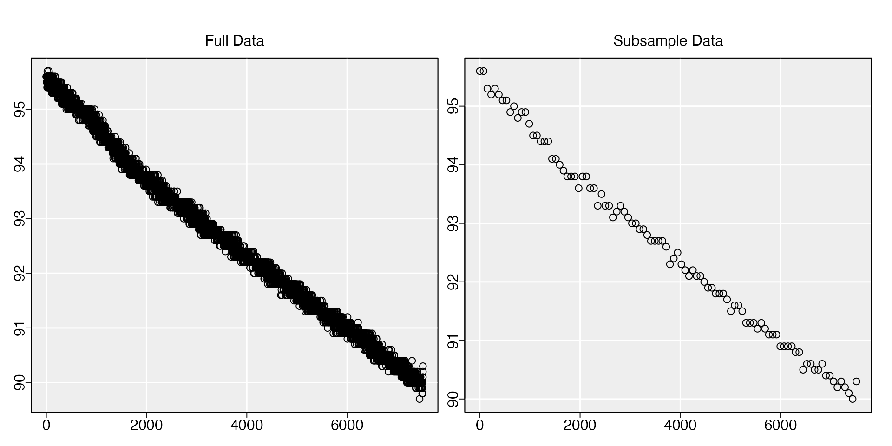

Another useful utility function in respR in
subsample(). This is intended to thin or reduce the
resolution of large datasets so analysis processing times are reduced,
which may be useful for computationally intensive functions such as
auto_rate() and oxy_crit().
respR has been designed to be extremely fast in running
analyses of large datasets, and as computing power increases over time,
there is rarely any need to do this, and caution would suggest datasets
are kept complete where possible. We have found it useful primarily to
reduce data sizes to use with other packages
which take a prohibitively long time to process data, so their results
can be compared with those of respR.
subsample has two ways of selecting the degree of
subsampling. The n input will cause every n’th element or
row to be subsampled. The probably more useful length.out
input uniformly subsamples the data to this total length or number of
rows.
The function works with both vectors and data frames, and will output
an object of the same class. A plot is produced so you can check the
subsample is still representative of the original, or it can be
suppressed with plot = FALSE.
Subsample by every n’th element
#' # Subsample by every 200th row:
subsample(squid.rd, n = 200, plot = FALSE)Subsample to a specific length
#' # Subsample to 100 rows:
subsample(sardine.rd, length.out = 100)
#> subsample: plotting first column of data only.